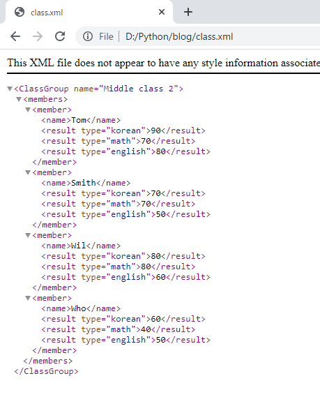
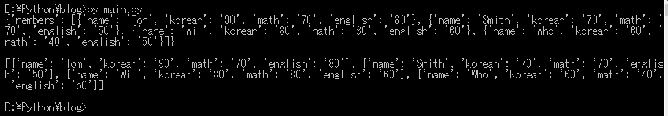

[Python] XMLファイルを扱う方法
こんにちは。明月です。
この投稿はPythonでXMLファイルを扱う方法に関する説明です。
最近はXMLファイルは以前よりよく使わないですけど、10年前でもプログラムの環境設定や標準データ構造でXMLをよく使いました。最近はJSONタイプがたくさん使います。
XMLが構造がタグを開き、閉めの構造だし、各タグにアトリビュートを入れられる構造なのでデータを表現することではすごくいい構造です。
例えば、コンパイル言語でクラスをデータとして作ると思えば、最初のタグをクラス名に作成し、派生タグに変数の値を格納できます。派生タグのアトリビュートを利用して変数のデータタイプなどを指定してクラスすることでドキュメントに作成することができます。
XMLがこんなにいいことだけあることではなく、短所もあります。タグが開き、閉めることがあるのでファイルのサイズが大きくなるし、アトリビュートやデータが多くなれば可読性が落ちることがあります。
特にデータサイズが大きくなることはパフォーマンスなどに関係があるものなので特に致命的な短所です。その為、最近はXMLと似ているJSONタイプをよく使います。
でも、XMLタイプを全然使わないことではなく、パフォーマンスを関係ず、データの詳細に表現する必要がある時に使えます。
特に、環境設定などでよく使いますが、代表的にC#のApp.configとTomcatのserver.xml、JavaのPom設定などでよく使います。
それで環境ファイルをプログラム的に管理することや整合性チェックなどでPythonソースを作成して管理します。例えば、JenkinsみたいにCIでデプロイする時、Jenkinsのshell commandを作成することでPythonコードを使えば環境設定管理をしやすくできます。
# xmlを扱うためにlxmlのetreeをimportする。
from lxml import etree
# ディクショナリデータをxmlに作る。
data = [{'name':'Tom','korean':90,'math':70,'english':80},
{'name':'Smith','korean':70,'math':70,'english':50},
{'name':'Wil','korean':80,'math':80,'english':60},
{'name':'Who','korean':60,'math':40,'english':50}]
# xmlのrootはClassGroupタグで生成した。
root = etree.Element("ClassGroup")
# ClassGroupタグのアトリビュートの名を設定した。
root.set("name", "Middle class 2")
# membersタグを生成した。
members = etree.Element("members")
# rootの派生タグにした。
root.append(members)
# リストデータを繰り返してディクショナリのデータを受け取る。
for item in data:
# SubElement関数を使えばElement生成とappendが同時にできる。つまりmembersの派生タグでmemberを生成する。
#member = etree.Element("member")
#members.append(member)
member = etree.SubElement(members, "member")
# ディクショナリデータのキーを取得する。
keys = tuple(item.keys())
for key in keys:
# keyがnameの場合、nameをタグ名をする。
if key == 'name':
# memberタグ派生でキー別でタグを生成する。
sub = etree.SubElement(member, key)
else :
# その以外はresultタグを生成する。
sub = etree.SubElement(member, "result")
# typeアトリビュートにキーデータを入れる。
sub.set("type", key)
# ディクショナリの値を格納する。
sub.text = str(item[key])
# rootを基づいてxmlデータを作成する。pretty_printパラメータは人が見やすく設定すること。つまり、falseなら改行とドキュメントフォマート設定ができない。
x_output = etree.tostring(root, pretty_print=True, encoding='UTF-8')
# ファイルIOを通ってXMLファイルを出力する。
with open("class.xml", "w") as handle:
# ファイルに作成する。
print('',file=handle)
print(x_output.decode('utf-8'),file=handle)

上の結果をみればXMLがよく作られたことを確認できます。
element.Elementを使ってappendすることはSubElementを使うことと同じ結果になります。ソースステップのため、SubElementを使うほうが良いと思います。
そしてアトリビュートの場合、set関数を使って格納できます。
今回はXMLファイルを読み込んでディクショナリタイプに生成しましょう。
# xmlを扱うためにlxmlのetreeをimportする。
from lxml import etree
# xmlを探索する関数。
def explore_sub_node(childrens):
# return値はディクショナリで設定する。
ret = {}
# 派生ノードを読み込む。
for child in childrens:
# タグがresultの場合はtypeのアトリビュートからディクショナリキーに設定する。
if child.tag == 'result':
# キー取得
keys = tuple(child.attrib.keys())
# アトリビュートの値を取得する。
for key in keys:
# typeの値はディクショナリキーに設定する。
ret[child.attrib[key]] = child.text
# もし派生ノードがあれば再帰関数(※関数で自分の関数を呼び出すこと)を利用して派生ノードをディレクトリタイプに生成する。
elif len(child.getchildren()) > 0:
ret[child.tag] = [explore_sub_node(ret) for ret in child.getchildren()]
# そうではなければタグの値を格納する。
else :
ret[child.tag] = child.text
return ret
# xmlを読み込む関数を使えばIOを使う必要がない。
tree = etree.ElementTree(file="class.xml")
# rootを読み込む。
root = tree.getroot()
# xml探索関数を利用してxmlをディレクトリで変換した。
dict = explore_sub_node(root.getchildren())
# コンソール出力。 rootから読み込んだからmembersディクショナリで設定されている。
print(dict)
# 改行
print()
# コンソール出力。 rootの派生から出力する。
print(dict["members"])

ルートによってリストではなくディクショナリタイプに生成されました。なので、ルートの中で出力すれば最初のリストのディクショナリタイプに生成されることを確認できます。
ここまでPythonでXMLファイルを扱う方法に関する説明でした。
ご不明なところや間違いところがあればコメントしてください。
- [Python] Redisデータベースに接続して使い方2022/02/21 18:23:49
- [Python] Seleniumライブラリを使う方法(自動ウェブテスト、ウェブスクレイピング)2021/10/25 19:29:00
- [Python] メール(smtplib)を送信する方法2020/07/27 18:38:43
- [Python] HttpConnection(requestsモジュール)でウェブサーバーで接続する方法2020/07/20 14:41:51
- [Python] Excel(openpyxl)を扱う方法2020/07/16 16:40:31
- [Python] ファイル圧縮、解凍(zipfile)する方法2020/07/14 19:14:22
- [Python] Apache cgiでPythonを使う方法2020/07/09 19:58:19
- [Python] Web serverを起動する方法(http.server)2020/07/09 00:13:13
- [Python] WebSocketを使う方法2020/07/07 17:29:18
- [Python] PythonとJavaのソケット通信する方法2020/07/03 18:35:50
- [Python] PythonとC#のソケット通信2020/07/01 19:28:22
- [Python] INI(環境設定ファイル)を扱う方法2020/06/30 18:26:01
- [Python] Jsonを扱う方法2020/06/29 19:18:15
- [Python] XMLファイルを扱う方法2020/06/26 19:18:14
- [Python] IOを利用してCSVファイルを扱う方法2020/06/25 18:20:30
- check2024/04/10 19:03:53
- [Java] 64.Spring bootとReactを連結する方法(Buildする方法)2022/03/25 21:02:18
- [Javascript] Node.jsをインストールしてReactを使う方法2022/03/23 18:01:34
- [Java] 63. Spring bootでcronスケジューラとComponentアノテーション2022/03/16 18:57:30
- [Java] 62. Spring bootでWeb-Filterを設定する方法(Spring Security)2022/03/15 22:16:37
- [Java] JWT(Json Web Token)を発行、確認する方法2022/03/14 19:12:58
- [Java] 61. Spring bootでRedisデータベースを利用してセッションクラスタリング設定する方法2022/03/01 18:20:52
- [Java] 60. Spring bootでApacheの連結とロードバランシングを設定する方法2022/02/28 18:45:48
- [Java] 59. Spring bootのJPAでEntityManagerを使い方2022/02/25 18:27:48
- [Java] 58. EclipseでSpring bootのJPAを設定する方法2022/02/23 18:11:10
- [Java] 57. EclipseでSpring bootを設定する方法2022/02/22 19:04:49
- [Python] Redisデータベースに接続して使い方2022/02/21 18:23:49
- [Java] Redisデータベースを接続して使い方(Jedisライブラリ)2022/02/16 18:13:17
- [C#] Redisのデータベースを接続して使い方2022/02/15 18:46:09
- [CentOS] Redisデータベースをインストールする方法とコマンドを使い方2022/02/14 18:33:07